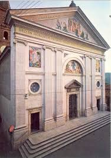
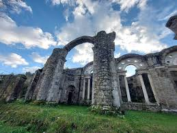

Genazzano si trova a 50 km da Roma ed è facilmente raggiungibile in auto. Puoi prendere l'Autostrada A1 con uscita a Valmontone oppure percorrere Via Casilina.
La stazione ferroviaria più vicina a Genazzano è quella di Valmontone, situata a circa 10 km da Genazzano. Questa stazione è servita da treni regionali sulla linea Roma-Cassino. Una volta arrivato alla stazione di Valmontone, puoi prendere un autobus locale per raggiungere Genazzano.
Genazzano è ben collegata in autobus con Roma e altre città vicine. Gli autobus COTRAL forniscono collegamenti frequenti da e per Roma, con diverse partenze giornaliere. La principale fermata degli autobus a Roma è la stazione Termini. Da qui, puoi prendere un autobus COTRAL direttamente per Genazzano.